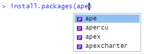
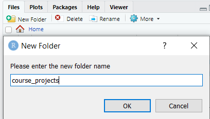
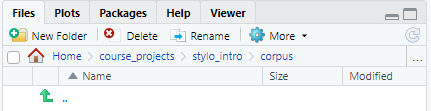
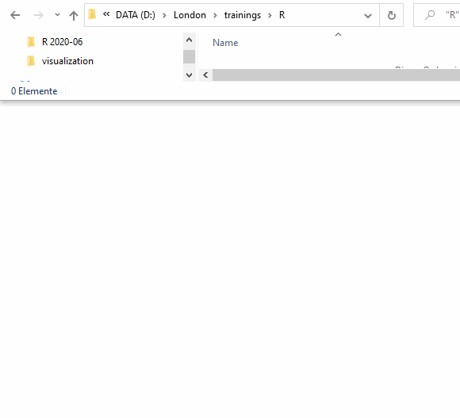

9 week 8: Introducing R (in GUI) through Stylo(metry)
3/25/2021 Thursday
Prepare for Class:
- Install software (instructions below):
- Read the following articles:
- Holmes, David I. “The Evolution of Stylometry in Humanities Scholarship.”
Literary & Linguistic Computing 13, no. 3 (1998): 111-117.
[Course Google Drive] - Koppel, M., Schler, J. and Argamon, S. “Computational Methods in Authorship
Attribution.” Journal of the American Society for Information Science and
Technology 60, no. 1 (2009): 9-26. [Course Google Drive]
- Eder, Maciej, Jan Rybicki, and Mike Kestemont. “Stylometry with R — A Package
for Computational Text Analysis.” The R Journal Vol. 8/1 (2016).
[Course Google Drive]
- Holmes, David I. “The Evolution of Stylometry in Humanities Scholarship.”
Literary & Linguistic Computing 13, no. 3 (1998): 111-117.
- Optional reading (extra credit for UMD students):
- Sadeghi, Behnam. “The Chronology of the Qur’ān: A Stylometric Research Program.” Arabica 58.3–4 (2011): 210-99. [Course Google Drive]
In class:
- Weekly reading report.
- Collaboratory assignment with ‘Stylo’ R Package (bring your computers!).
9.1 Installing R
R is a programming language that is often used for data analysis.
It contains powerful and easy-to-use tools for statistical analysis and
creating graphs.
The next weeks, we will provide an introduction to programming with R,
geared at absolute beginners, and provide multiple usage examples for
digital humanists.
Installing R is quite straightforward. We will install it from CRAN
(The Comprehensive R Archive Network).
9.1.1 On Mac
- Before installing R, install XQuartz and XCode to avoid trouble down the line:
- go to xquartz.org/,
click on the
XQuartz-2.8.0.dmglink to download XQuartz (the version number may be different; the website will always bring you to the link for the latest version) - Open Terminal, and run the following command:
xcode-select --install
- Download the latest R version: go to
cran.r-project.org/bin/macosx/
and click on the
R-4.0.4.pkglink to downloadR(the version number may be different; the website will always bring you to the link for the latest version) - click on the downloaded file to start the installation process. You can stick
with the defaults, so click every
Nextbutton until you reach the end of the installation process.
9.1.2 On Windows
- Go to https://cran.r-project.org/, and click on “Download R for Windows”
- Click “base”
- Click “Download R 4.0.4 for Windows” (the version number may be different; the website will always bring you to the link for the latest version)
- Double-click the
R-4.0.4-win.exefile (again, the version number may be different) to start the installation process. You can stick with the defaults, so click everyNextbutton until you reach the end of the installation process.
9.2 Installing RStudio
RStudio is a working environment (IDE, Integrated Development Environment) for R that allows you to write R code and execute it.
You can write R scripts in any text editor and execute them from any
command line program, but an IDE like RStudio makes writing and executing
R code much easier.
IMPORTANT: install RStudio only after you have installed R
9.2.1 On Mac
- Go to https://rstudio.com/products/rstudio/download/#download
- Click the
DOWNLOAD RSTUDIO FOR MAC OSbutton. If this button does not appear for some reason, click the download link for the macOS 10 version.dmg filein the table below:

- Click the downloaded
RStudio-1.4.1106.dmgfile (NB: the version number may be different; the website will always bring you to the link for the latest version) to start the installation process. You can stick with the defaults, so click everyNextbutton until you reach the end of the installation process.
9.2.2 On Windows
- Go to https://rstudio.com/products/rstudio/download/#download
- Click the
DOWNLOAD RSTUDIO FOR WINDOWSbutton:
 If this button does not appear for some reason, click the download link for the
Windows 10/8 version
If this button does not appear for some reason, click the download link for the
Windows 10/8 version .exe file in the table below:

- Double-click the downloaded
RStudio-1.4.1106.exefile (NB: the version number may be different; the website will always bring you to the link for the latest version) to start the installation process. You can stick with the defaults, so click everyNextbutton until you reach the end of the installation process.
9.3 The RStudio interface
- Open RStudio
- in Windows: click the
Startbutton at the bottom left of your screen, type “RStudio” and click on the RStudio App button that appears: - on Mac: click RStudio in your
Applicationsscreen
RStudio icon (on Windows)
- The interface should look more or less like this:

RStudio interface (on Mac)
The interface contains three panes:
- On the left, you will find the Console pane , which allows you to write and
execute code interactively, just like in a command-line program.
Note that the prompt in RStudio looks like
>, not like$. - On the top right, you will find the Environment pane, which will show you
the
Robjects in your current project, and a history of the most recent commands you executed in the console pane. - On the bottom right, you will find the Files pane, where you can select
files to open with RStudio. This pane also contains tabs for displaying graphs
you create in RStudio, Help information for using R and different packages
(i.e., extensions of the
Rlanguage), etc.
You can mimimize and maximize each pane using the minimize and maximize buttons
in each pane:
RStudio minimize and maximize buttons
The console pane allows you to write code interactively: after every line you
write, R will execute (run) that line once you hit the Enter key.
Sometimes it may be useful to write multiple commands and then execute these
at once. Such a series of commands is called a script and is saved in a
text file with the extension .r (e.g., hello_world.r). One of the main advantages
of saving your commands in a script is that you can re-run the same series of
commands whenever you wish.
You can write a script in any text editor; but RStudio also contains a script editor that offers additional functionalities: an autocomplete function, a button for executing your script, a debugger to help you find mistakes in your scripts, etc.
In order to start writing a script in RStudio, choose File > New File > R Script
in the menu (or use the Ctrl+Shift+N shortcut):

This will open up a fourth pane in the RStudio window, called the source pane:

9.4 Installing stylo and its dependencies
Like many programming languages, the core development team of R focuses on the
main functionality of the language. Users can add functionalities that they find
useful themselves, and can share these with all users of the R language.
These extensions to the main functionality of R are called packages,
and can be downloaded from a central repository of packages:
cran.r-project.org/web/packages/.
The CRAN package repository contains 17.351 packages at the time of writing
(March 2021).
Examples of such packages are ggplot2, for creating advanced graphs, and
stylo, the stylometric package we are going to introduce currently.
Some of these packages build upon other packages, and require these are installed
first. For example, in order to install the stylo package, we will have to
install a number of packages first; these are referred to as stylo’s
“dependencies”:
- ape
- tcltk2
- Open RStudio
- in Windows: click the
Startbutton at the bottom left of your screen, type “RStudio” and click on the RStudio App button that appears: - on Mac: click RStudio in your
Applicationsscreen
RStudio icon (on Windows)
- Packages in R are installed using the
install.packagecommand. We will start by installingstyolo’s first dependency:ape(a package for creating phylogenetic trees, that is, diagrams showing evolutionary relationships between entities)
In RStudio’s console pane, write the following command and hit Enter:
> install.packages("ape")A few remarks:
the
>in the command symbolizes the prompt; you do not have to type it, it is only there to show that you have to type the command in an interactive prompt.You may receive a warning that
RTools is required to build R packages but is not currently installed. You can safely ignore this warning for now, the package will be installed anyway.If you start typing the name of the package (without the quotes), RStudio will show you a list of available packages; you can select the one you need by clicking it in the list:
Autocomplete package name
If you do so, RStudio will autocomplete the command:
> install.packages("ape")Hit
Enterto execute the command and install the package.NB: Note that as part of the autocomplete process, RStudio added the quotes. If you type the full name of the package without quotes, and hit
Enter, RStudio will throw an error:
You forgot the quotes around the package name
- Repeat step 2 for the package
tcltk2(which contains additional graphical elements (“widgets”) for building graphical interfaces):
> install.packages("tcltk2")- Finally, repeat step 2 for the package
styloitself:
> install.packages("stylo")NB: to get a list of all installable packages, run the command install.packages()
without anything between the brackets.
9.5 First steps with the Stylo package
stylo is a package for stylometry, created by Maciej Eder (this is how you
pronounce his first name:
pronouncenames.com/pronounce/maciej).
For a description of the package, see Eder’s article “Stylometry with R: A Package for Computational Text Analysis” in the Google Drive reader, and for more on stylometry, see the article by Holmes.
9.5.1 Setting up a stylo project
Every stylo project needs to be located in a separate folder. The texts you want to analyse in the project need to be in a subfolder you name “corpus”.
- Create a folder for your first stylo project (e.g.,
Home/course_projects/stylo_intro); we are going to call this folder the “project folder” during this tutorial. You can create the folder using your favourite command line program, or using your system’s file manager (Explorer on Windows, Finder on Mac), but we will create the folders using RStudio: in the Files pane (bottom right) click theHomebutton, and thenNew Folder. Type “course_projects” in the popup that appears:

Find the new folder in the list of files and folders in the Files pane, and click
it. Then hit the New Folder button again to create a new folder inside the
course_projects folder, and type “stylo_intro” in the popup that appears.
Click the new stylo_intro folder to enter it.
- Using the same method, create a new folder within the project folder
(
Home/course_projects/stylo_intro), and call it “corpus”. If you move into that folder, the full path to that folder should now be displayed in the File pane:

- Add your first texts into the corpus folder. To use texts with
stylo, they must have a specific format:
- the texts should be all in plain text format (or all in html or xml)
- the text files should be all in the same encoding (preferably UTF-8 if you have text in Arabic script (Arabic, Persian, Urdu, …))
- file names:
- keep file names short, because they will be used in visualizations
- use very consistent filename format
- Metadata about the texts can be encoded in the filenames; divide metadata
categories by underscore.
For example, if you want to be able to display the titles and author names
of the books in the corpus, file names could have the following format:
author_title.txt(without spaces), e.g., “Cervantes_DonQuixote.txt”, “Tabari_Tarikh.txt”, … stylowill classify the texts in its output using the first part of the file name (the part before the first underscore).- If you are interested in authorship attribution, put the author’s name in the first part of the file name (e.g., “Cervantes_DonQuixote.txt”, “Tabari_Tarikh.txt”);
- if you’re interested in genre, put the genre in the first place: e.g.,
trag_Shakespeare_Hamlet.txt,com_Shakespeare_Taming.txt - if you’re trying to see differences between texts written by men and women, put a gender marker in the first part (e.g., “f_JaneAusten_Sense.txt”, “m_WalterScott_Ivanhoe.txt”)
Add at least two text files to the folder to perform your first stylo analysis.
9.5.2 Open the stylo GUI
The stylo package contains a graphical user interface (GUI) to make stylometric
analysis with R easier for beginners.

stylo’s GUI
We will still need RStudio to open this graphical interface. Follow the next steps to open the GUI:
- In RStudio’s console pane, set your working directory to the folder you
created for this project (e.g.,
Home/course_projects/stylo_intro).Ruses the commandsetwd(set working directory) for this task:
> setwd("~/course_projects/stylo_intro")A few remarks:
- You can also use the RStudio menu to set the working directory: go to
Session > Set Working Directory > Choose Directory. This will open a familiar- looking folder selection dialog from which you can select your working directory. - In the example script, we use the tilda (
~) as the symbol for theHomedirectory of your computer. This symbol works inRon Windows, Mac and Linux. On Windows, it refers to theDocumentsfolder. - The brackets after
setwdindicate thatsetwdis a function thatRneeds to execute. A function is a sequence of commands that is given a name (in this case,setwd). Between the brackets of a function, you can add a number of inputs, called arguments; each function has specific types of arguments it needs to be able to run (you can see these by typinghelp("package_name")in RStudio: e.g.,help("setwd")).setwdrequires one argument, a string of characters that represents the path to the working directory. - You can get your current working directory by using the command
getwd(get working directory). This is also a function - In Windows, backslashes (
\) are usually used for deliminating folders in a path. For example, if you click the file path bar in Windows Explorer, the path to the file will become visible, and you can copy it:

Pasting a path that contains backslashes between the brackets of setwd()
will create problems, because R will interpret the backslashes as special
characters that lend a special value to the following character.
If you still would like to paste a path with backslashes, you have to use a
workaround. The easiest way is to use the readline() function to deal with
the backslash characters (readline() will open an input field on the line
below the command in which you can paste your path):
> setwd(readline())
- We have installed the package
styloabove. However, in order to be able to use its functions in our currentRsession, we need to load the package. The main function of thestylopackage is calledstylo(). Try running this command:
> stylo()RStudio will display an error message:
Error message: stylo not loaded
This is because we have not loaded the stylo package yet; R is blissfully
unaware of the names of functions in an installed package until it is loaded
in the current session.
In order to use the stylo() function of the stylo package, we have to load
the package first. R uses the library command to do that;
> library("stylo")After we have run this command, we can try again:
> stylo()This time, RStudio will not display an error, but a popup will open that
contains stylo’s graphical user interface (GUI):
stylo’s GUI
NB: some Mac users report receiving an error message “GUI could not be launched”. If this happens, make sure you have installed XQuartz prior to installing R (see above). If you hadn’t installed XQuartz, do it now, and re- install R, RStudio and stylo. Restart your computer before trying to start up stylo. If you are still experiencing trouble, see github.com/computationalstylistics/stylo#installation-issues for more possible solutions.
For an overview of all the options in the GUI, see the “STYLO R Script Mini HOW TO” file in the course’s Google Drive.
NB: for Arabic-script languages, set the LANGUAGE option in the INPUT & LANGUAGE
tab to Other.
9.5.3 First stylo experiment
For our first stylo experiment, we will